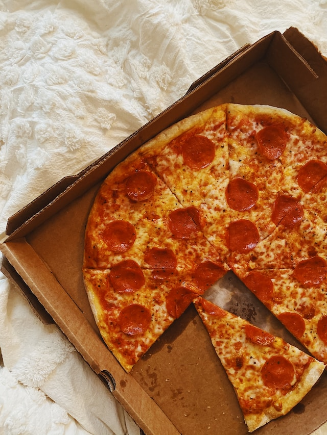

Pepperoni Pizza

Description
Pepperoni pizza is a classic italian dish. It's dough with tomato sauce on top of it, then a layer of cheese and any other toppings usually a protien of choice.
Ingrediants
1 can (8 ounces) of Tomato Sauce-No Salt Added
1/4 cup grated Parmesan cheese
1/4 teaspoon dried oregano
1 prebaked think pizza crust (12-inch)
1 cup shredded part-skim mozzarella cheese
Steps
- Preheat oven to 450°F. Combine tomato sauce, Parmesan cheese and oregano in small bowl; spread tomato sauce evenly over crust. Sprinkle pizza with mozzarella cheese; top with pepperoni.
- Place on ungreased pizza pan. Bake 12 to 15 minutes or until edges of crust are browned lightly and cheese melts. Cut pizza into 6 slices.